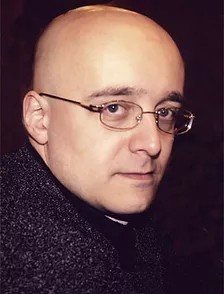

Хор
профессиональный хор

Регент профессионального хора - Дмитрий Валерьевич Ралко
Лауреат I премии Международного конкурса Vivat talant! в номинации «Симфоническое дирижирование» (Санкт-Петербург, 2012).
Дмитрий Ралко окончил Санкт-Петербургскую государственную консерваторию им. Н.А. Римского-Корсакова по специальностям «хоровое» и «оперно-симфоническое дирижирование». В 1996 году начал работать главным хормейстером и дирижером Ансамбля песни и пляски Ленинградского военного округа. С этим коллективом он дал более трехсот концертов в России, а также выступал во Франции, Испании и Финляндии. В 2003 году был назначен дирижером Театра оперы и балета Санкт-Петербургской консерватории, где дирижировал операми «Так поступают все» и «Свадьба Фигаро» Моцарта, «Севильский цирюльник» Россини, «Богема» Пуччини, «Травиата» Верди, «Евгений Онегин» Чайковского, а также рядом детских спектаклей и гала-концертов оперной музыки.
В 2004–2006 годах являлся дирижером Симфонического оркестра Санкт-Петербургской государственной капеллы. Также сотрудничал с Челябинским театром оперы и балета (спектакль «Свадьба Фигаро») и Концертным камерным оркестром Санкт-Петербургской консерватории. В 2007–2009 годах был главным дирижером Большого симфонического оркестра студентов Санкт-Петербургской консерватории. Преподавал в оперном классе вокального факультета консерватории.
С 2007 года и по настоящее время является художественным руководителем и дирижером Камерного оркестра Музыкального колледжа им. Н.А. Римского-Корсакова. В 2011 году на базе этого оркестра и вокального факультета колледжа создал студенческий оперный театр-студию «Моцартеум-театр», в котором осуществил постановки опер «Дидона и Эней» Пёрселла и «Служанка-госпожа» Перголези.
С 2007 года является хормейстером детского хора Мариинского театра. Под его руководством детский хор принимал участие во многих проектах театра, в числе которых премьеры опер «Братья Карамазовы», «Женщина без тени», «Аттила», «Свадьба Фигаро» (постановка Александра Петрова), «Сон в летнюю ночь»; балет Дж. Баланчина «Сон в летнюю ночь»; исполнение кантаты «Кармина бурана», Третьей и Восьмой симфоний Малера, Девятой симфонии Бетховена, а также запись оперы «Парсифаль» (лейбл Mariinsky).